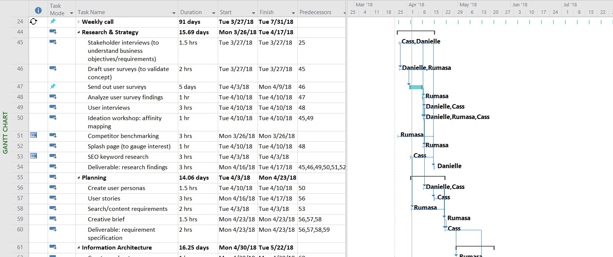

Overview
As I was growing up, I was fortunate to be surrounded by a supportive group of girl friends - my troopmates from a youth organization called Girl Scouts. The organization empowers girls to lead with integrity, compassion, and confidence in all that they do.
When I received the opportunity to work with B~STEM Project, an organization that provides programming for girls interested in business and STEM-related fields, I jumped at the chance. Their mission reminded me of my time in Girl Scouts and how it had helped prepare me for my own career. I was overjoyed at the prospect of working with a group that could make a similar impact on other girls' lives.
I was paired with two other UX designers to build the prototype for a vibrant, online community - a resource to empower B~STEM Project members worldwide to meet, form their own groups for the organization's hackathons, continue communication after local events, and learn from each other. We planned to present our prototype to sponsors and donors by the end of July.
Objective:
Validate the need for an online community for girls interested in business/STEM fields to learn from and work with each other, create a prototype for usability testing, and present findings to B~STEM Project's Board of Directors.
Process
We started by mapping out the UX process, what steps were needed to complete the project, and determining who would take ownership of each step. I used Microsoft Project (a software I was already familiar with) to clearly define how long each task would take and who would participate.

Our team primarily communicated through a work messaging application called Slack. We used one channel for general updates and used direct group messages and scheduled quick calls for more detailed changes/updates.
I created the agenda for each of our weekly calls, keeping us accountable and on task.
Research and planning
We set out to design a survey that would simultaneously screen potential interview participants and validate females' need for an online community. We wanted to gauge what methods potential users already used to learn more about or find news about their chosen business/STEM fields, and how comfortable they would be in connecting with like-minded females over the Internet.
What we wanted to explore:
- Potential users' current participation in any online communities
- What specific fields/industries they were interested in
- What methods they used to learn more about those fields/industries
- Collaborative learning (their interest in finding others who were interested in similar topics)
- Experiences with mentorship (how users got connected with mentors/mentees, what they enjoyed about their mentorship experience, and what was frustrating about their mentorship experience)
- Diversity in the userbase (occupation/industry, level of schooling completed, employment status)
- What resources they relied on during their career search, and if there were any other resources they would have appreciated
User survey
Since our potential user base included females of all ages, wording the survey appropriately for each target group was challenging. We set up the survey so that screener questions (gender and age range) would direct each set of participants to a different section: younger students, older students, and professionals.
Before we sent out the survey, I tested out the "younger students" questions by soliciting input from younger cousins - does the term "coding" mean anything, or is it better to stay general and use "technology"? Does "how long do you spend on the computer" make more sense, or should it be "how long do you spend on the Internet"?
Not only did their feedback help to fine-tune some of the survey questions, but this was a great precursor for the user interviews. I was excited to see what insights the students' interviews could offer.
We brainstormed distribution channels for the survey. In addition to past participants, we considered existing online community groups (Slack, Discord, Facebook), offline community groups (local Girl Scouts troops), and word of mouth (reaching out through family/friends in various age groups).
Competitors
Survey results
This helped to form tentative "how might we" statements to guide our design:
- How might we bring together girls of different demographics to comfortably collaborate?
- How might we attract females to start using the community?
- How might we encourage girls to participate in the community and share their findings?
User interview insights
Common frustrations:
Common behaviors:
Common goals:
Solution
Ideation
Early on, our lead stakeholder expressed concerns that she wanted us to explore ways to interest users in participating in the online community every day. I proposed that we incentivize consistent participation by looking into gamification - establishing a point system where users gain points when they read articles or add comments, and when they help explain articles or rewrite them for the younger crowd. I only had fleeting ideas for what the points could be used towards (glamming avatars? special badges?), but felt it was important to keep pushing forward through the process and jotting ideas down throughout.
Designing for the users
Design
Sketching process
Developing the prototype
Validation
Reflection and next steps
Details
Context
Project for B~Stem UX Design internship
Date
March 2018 - July 2018
Timeframe
7.5 hours researching
2 hours prototyping
Tools
Slack, Microsoft Project, Google Forms, Microsoft Visio, Adobe Photoshop, Invision
Role
UX Designer
Deliverables
Project timeline, competitive analysis, user personas, empathy maps, user flows, user stories, sketches, card-sorting, high-fidelity wireframes, clickable prototype, style guide, usability testing analysis
Devices
iOS
{kind=link}